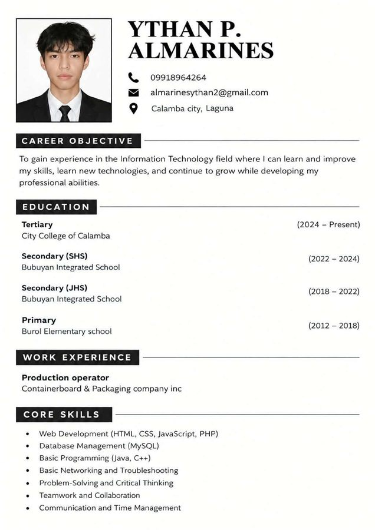

Graphic designerFrom Sketch to ScreenPortfolio 2026
Hi, I’m Ythan Almarines.
Think it. Sketch it. Create it.
I’m a third-year BSIT student at City College of Calamba in Laguna, working toward a career in information technology. I design logos, posters and social media graphics in Photoshop and Canva, and I build websites with HTML, CSS and JavaScript. Every project here starts as a pencil sketch.
- Based in
- Calamba City, Laguna, Philippines
- Focus
- Logos, posters, web design
- Status
- 3rd year student
01About me
I bring ideas to life through creativity and technology.
I’m a third-year BSIT student at City College of Calamba with an interest in graphic design, web development, and technology. I hold a TESDA National Certificate II in Computer Systems Servicing and a freeCodeCamp Responsive Web Design certification, and I built both the front end and back end of BettaCart, an ordering system for betta fish buyers, as an academic project. I enjoy combining creativity with technical skills, and I keep improving through hands-on practice, from designs in Photoshop and Canva to configuring networks in Cisco Packet Tracer.
What inspires me. I find inspiration in everyday creativity, modern digital designs, and the endless possibilities of technology. I enjoy discovering new ideas and exploring different ways to turn them into something visually meaningful.
Good design is not just about looking great — it’s about making ideas clear, creative, and meaningful.
Next. I aim to gain more experience in graphic design and Information Technology, expand my creative and technical skills, and continue growing professionally.
At a glance
- Full name
- Ythan P. Almarines
- Education
- BSIT, City College of Calamba
- Occupation
- 3rd year student; previously production operator
- Technical interests
- Computer hardware, IT support, basic networking
- Focus
- Logos, posters, web design
02Skills
Tools, craft and the way I work
02.1Design tools
- Photoshop
- Canva
- Figma
- VS Code
02.2Design practice
- Branding
- Layout
- Typography
02.3Web & IT
- HTML
- CSS
- JavaScript
- PHP
- MySQL
- Java
- C++
- Networking & troubleshooting
02.4Soft skills
- Problem-solving
- Critical thinking
- Teamwork
- Collaboration
- Communication
- Time management
03Experience
Where the work happened
Work, certifications and projects so far, oldest first. Open “View proof” to see each one.
-
June 2025 – July 2025
Production operator
Containerboard & Packaging Company Inc.
In charge of gluing and assembling boxes.
-
September 2025 – November 2025
Legacy Responsive Web Design V8 Developer Certification
freeCodeCamp.org
About 300 hours of coursework, completed November 18, 2025.
-
Issued July 2026
Computer Systems Servicing NC II
Technical Education and Skills Development Authority (TESDA)
National Certificate II, valid until July 2031.
-
August 2026 – October 2026
BettaCart: A Web-Based Ordering Management System for Betta Fish Buyers
Academic project · City College of Calamba
In charge of the front end and back end of the system (full stack).
-
August 2026 – Present
Cisco Packet Tracer networking lab
City College of Calamba
In charge of configuring the network.


04Education
Education
-
2024 – Present
Bachelor of Science in Information Technology (BSIT)
City College of Calamba
-
2022 – 2024
Senior High School
Bubuyan Integrated School
-
2018 – 2022
Junior High School
Bubuyan Integrated School
-
2012 – 2018
Primary
Burol Elementary School
05Projects
Featured projects
Each plate pairs a finished piece with the sketch it started from, or shows a drawing on its own. The plates below are sample records for testing the layout and filters, not real work.
Nothing on the wall for that.
06Before & After
Drag the handle, tap anywhere on the image, or use the arrow keys.

07CV
The whole story on one page
My CV collects my education, experience, skills and selected projects in one printable PDF. Download a copy or open it in a new tab to read online.
- File
- Ythan_Almarines_Resume.pdf
- Format
- PDF, 1 page
- Updated
- November 2026
08Contact
Start with a sketch. Send me a message.
For commissions, collaborations, internships or feedback on my work.
- Phone
- 0991 896 4264
- Location
- Calamba City, Laguna, Philippines